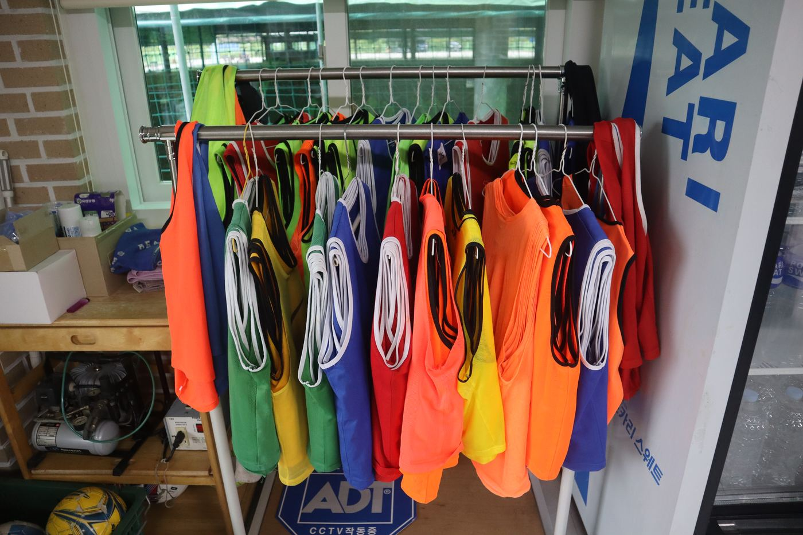

- 경기
- 6:6
- 주차
- 100대
- 운영
- 06–02시
- 대관
- 2시간 단위
시내와 가까운
고양 덕양구 풋살장
용두그린풋살장은 고양시 덕양구 용두동에 있는 야외 풋살장입니다. 고급 인조잔디와 밝은 LED 조명을 갖춰 이른 아침부터 새벽까지 편하게 경기할 수 있습니다.
이런 경기에 좋습니다 팀 경기, 친목 경기, 매주 같은 시간의 정기 대관
풋살화 필수 풋살화가 없으면 현장에서 유료로 빌릴 수 있습니다.

시설 한눈에 보기
- 경기 방식
- 6:6
- 잔디
- 고급 인조잔디
- 조명
- 밝은 LED 조명, 야간 경기 가능
- 그늘막
- 비와 강한 햇빛 부담 완화
- 대기실
- 경기 전후 대기, 쉬는 시간 음료 · 물 섭취
- 화장실
- 남 · 여 분리
- 주차
- 무료, 최대 100대
- 매점
- 물 · 음료 판매
빈손으로 와도
바로 뛸 수 있습니다
필요한 장비를 유 · 무상으로 빌려 드립니다. 퇴근길에 장비 없이 들러도 바로 경기할 수 있습니다.

빌린 물품은 경기가 끝나면 반납해 주세요. 유료 품목 요금은 현장에서 안내드립니다.
- 01
풋살공 · 축구공
풋살공과 축구공 모두 준비
- 02
팀조끼
팀 구분용, 여러 색상
- 03
풋살화 유료
여러 사이즈 · 브랜드
- 04
축구양말 판매
여러 종류 보유
- 05
키퍼장갑
골키퍼용 장갑
- 06
에어펌프
사무실에서 공기 주입
- 07
타월
경기 후 쓸 수건
- 08
응급의약품
사무실에서 사용 가능
갤러리

구장 전경 
구장 옆 통로 
입구 
대기실 
화장실 
주차장


이용 안내
방문 전에 확인해 주세요.
- 운영시간
- 연중무휴 06:00 – 02:00
- 대관 단위
- 2시간
- 경기 방식
- 6:6
- 준비물
- 풋살화 (필수, 현장 유료 대여 가능)
- 편의시설
- 대기실, 남 · 여 화장실, 무료 주차 100대
- 샤워
- 샤워 시설 없음, 화장실에서 간단히 세면 가능
긴급 휴무가 생기면 따로 안내드립니다.
가능해요
- 쉬는 시간, 대기실에서 음료 · 물 마시기
- 풋살화를 신고 입장
- 공 · 조끼 · 장갑 등 장비 대여
안 돼요
- 음식 반입
- 반려동물 동반
- 음주 후 입장, 경기 중 음주
구장 안에서는 질서와 안전 수칙을 지키고, 현장 안내에 따라 주세요.
예약 안내
- 1
문의
전화나 문자로 날짜, 시간, 인원을 알려 주세요.
- 2
안내 문자
예약 가능 여부와 입금 정보를 문자로 보내드립니다.
- 3
선입금
안내받은 계좌로 대관비를 입금해 주세요.
- 4
확정
입금 후 꼭 문자나 전화로 입금 확인을 요청해 주세요.
오시는 길
경기도 고양시 덕양구화랑로286번길 30
지도 검색 안내 네이버 지도 명칭을 정리하고 있습니다. 지금은 ‘용두그린풋살2구장’으로 검색되는 곳이 용두그린풋살장입니다.
- 주차
- 무료, 최대 100대
- 경의중앙선
- 화전역 약 5분
강매역 · 행신역 · 수색역 약 10분 - 3호선
- 삼송역 · 원흥역 · 원당역 약 10분
구파발역 · 연신내역 · 화정역 약 15분
유의사항
- 풋살화 필수
풋살화를 신지 않으면 구장 이용이 제한될 수 있습니다.
- 음식 반입 금지
구장과 대기실 모두 음식을 가져올 수 없습니다.
- 반려동물 동반 금지
안전을 위해 반려동물과 함께 들어올 수 없습니다.
- 음료 · 물은 대기실에서만
쉬는 시간에 대기실에서 드세요.
- 음주 후 입장 불가
경기 중 음주도 금지입니다.
- 대여 물품 반납
빌린 장비는 경기가 끝나면 반납해 주세요.
- 귀중품은 직접 관리
분실 시 책임지지 않습니다. 필요하면 따로 맡겨 주세요.
- 부상 주의
운동 중 부상은 풋살장이 책임지지 않습니다. 준비운동을 충분히 해 주세요.
자주 묻는 질문
환불규정이 어떻게 되나요?
- 이용 5일 전까지100% 환불
- 4일 – 2일 전50% 환불
- 1일 전 · 당일환불 · 이월 불가
폭우 시에는 이월할 수 있습니다.
예약은 어떻게 하나요?
010-6274-7575로 전화하거나 문자로 날짜와 시간을 문의해 주세요. 안내 문자대로 선입금한 뒤 입금 확인을 요청하시면 예약이 확정됩니다.
운영시간은 어떻게 되나요?
연중무휴로 오전 6시부터 새벽 2시까지 운영하며, 2시간 단위로 대관합니다. 긴급 휴무가 생기면 따로 안내드립니다.
주차는 무료인가요?
네, 주차는 무료이며 최대 100대까지 주차할 수 있습니다.
장비를 빌릴 수 있나요?
풋살공 · 축구공, 팀조끼, 키퍼장갑, 타월 등을 빌려 드립니다. 풋살화는 유료로 대여하고, 축구양말은 판매합니다. 빌린 물품은 경기 후 반납해 주세요.
비가 오는 날에도 이용할 수 있나요?
구장 위에 그늘막이 있어 비와 강한 햇빛 부담이 적습니다. 다만 완전히 막힌 실내 구장은 아니어서 폭우나 강풍에는 옆으로 비바람이 들어올 수 있습니다.
샤워 시설이 있나요?
샤워 시설은 없습니다. 화장실에서 간단히 씻을 수 있습니다.
가장 가까운 지하철역은 어디인가요?
3호선은 원흥역 · 원당역 · 삼송역에서 약 10분, 경의중앙선은 화전역에서 약 5분, 강매역에서 약 10분 거리입니다.